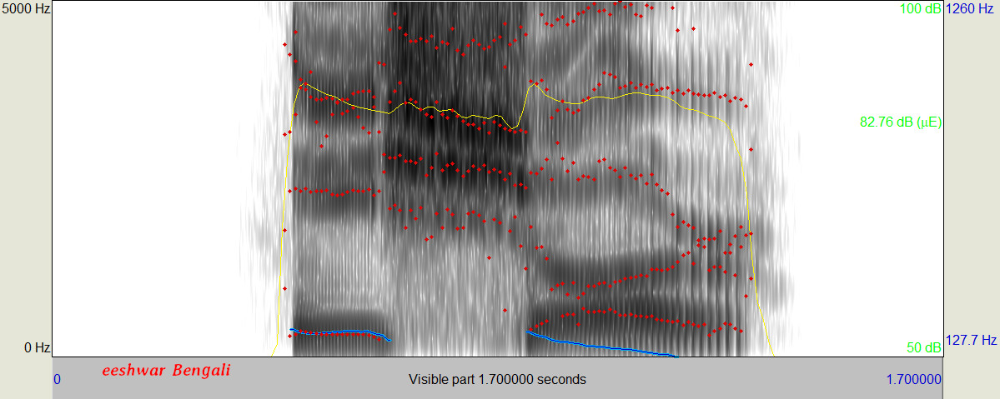

The letter v can mean many different sounds in many languages.
In English it is a labiodental fricative.
In Hindi it can be a bilabial approximant or a bilabial semivowel.
In Bengali it is just another way of spelling the sound b.
